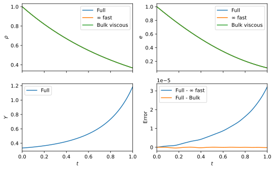
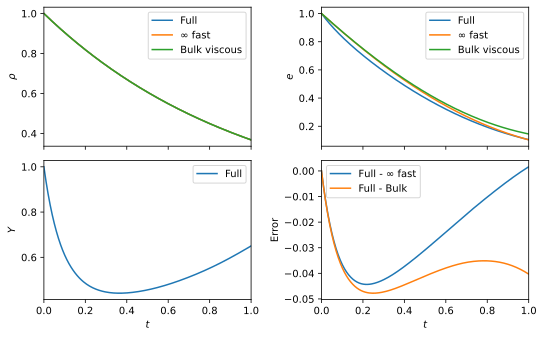
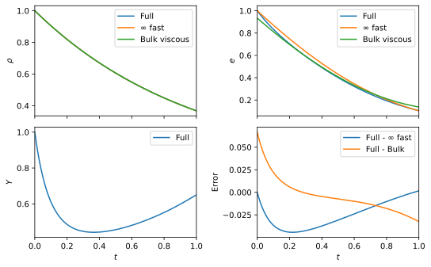

Nuclear reactions, Bulk viscosity, Neutron Star mergers, and Gravitational Waves
- Ian Hawke
- P Hammond, T Celora, M Hatton
- N Andersson, G Comer
- See 2205.11377, 2108.08649, 2107.01083
- github.com/IanHawke
- STAG, University of Southampton
GW170817
-
One multimessenger detection.
- Gravitational waves;
- $\gamma$ - first detected;
- All EM band - long term.
- GWs seen for inspiral.
-
Constrains matter properties.
- Masses;
- Tidal compressibility;
- Equation of state.
- O4 just starting:
- Many more detections.
How does parameter estimation work?
Parameter Estimation
Neutron star merger
- GWs drain energy from orbit.
- "Chirp" visible to LVK (GW170817).
-
Merger is messy:
- Shearing instabilities;
- Magnetic field wind up;
- Temperature increase through shocks;
- Nuclear reactions;
- Emission through EM, neutrinos.
-
Post-merger:
- jets;
- ejecta;
- probes high $T$ and high density regime.


Urca
$$ \begin{aligned} \text{n} &\to \text{p} + \text{e}^- + \bar{\nu}_e \\ \text{p} + \text{e}^- &\to \text{n} + \nu_e. \end{aligned} $$Keep track of species $Y_\text{e} \sim n_\text{e} / n_b$ by
$$ u^a \nabla_a Y_\text{e} = \Gamma_\text{e}(n_b, Y_\text{e}, T, \dots)/n_b. $$Timescales:
- Full merger event: $\sim$ seconds;
- Inspiral: $\sim 10^{-2}$ seconds;
- Post-merger: $\sim 10^{-3}$ seconds
- Numerics: $\sim 10^{-7}-10^{-8}$ seconds;
- Urca: $\sim 10^{-8}-10^{-10}$ seconds.
Toy model
Approximate fluid equations, using $\theta = \nabla_a u^a$:
$$ D_t \begin{pmatrix} n_b \\ e \\ Y_\text{e} \end{pmatrix} = - \begin{pmatrix} n_b \theta \\ (e + p) \theta \\ {\color{red}\epsilon^{-1}} \left( A Y_\text{e} - B \right) \end{pmatrix}. $$Short timescale encoded in $\epsilon \ll 1$.
Assume $Y_\text{e} = Y_0 + \epsilon Y_1 + \dots$ and separate scales:
$$ \begin{aligned} \mathcal{O}(\epsilon^{-1}) & \colon & 0 &= -A Y_0 + B, \\ \mathcal{O}(\epsilon^{0}) & \colon & D_t Y_0 &= -A Y_1 \\ & \implies & Y_1 &= -A^{-1} D_t Y_0 \\ & & &= F(n_b, e) \theta. \end{aligned} $$Expand pressure:
$$ \begin{aligned} p(n_b, e, Y_\text{e}) &= p(n_b, e, Y_0(n_b, e)) + \epsilon \partial_{Y_\text{e}} p Y_1 \\ &= p_0(n_b, e) + \Pi, \\ \Pi &= \zeta(n_b, e) \theta. \end{aligned} $$Appearance of bulk viscous pressure.
Reduced model:
$$ D_t \begin{pmatrix} n_b \\ e \end{pmatrix} = - \begin{pmatrix} n_b \theta \\ (e + {\color{blue} p_0 + \Pi}) \theta \end{pmatrix}. $$- No longer tracking species: always in equilibrium.
- Scales now tractable: $\Gamma_\text{e} \sim \epsilon^{-1} \to \Pi \sim \epsilon.$
Impact of $\Pi$
Check with a "real" equation of state:
- Bulk viscous pressure can be big for neutron star core in merger;
- Bulk viscous approximation needed above dashed lines (resolution dependent).
Impact on GWs
- Do nonlinear merger simulation;
- Simulate with $\epsilon \to 0, \infty$;
- Filter out inspiral signal;
- Reactions "soften" EOS, $$\Delta f \simeq 58\textrm{Hz}$$
- Compute the mismatch between signals, $$ \mathcal{M} \sim 1 - \frac{\max \langle h_1 \vert h_2 (\sim \textrm{phase}) \rangle}{\sqrt{\langle h_1 \vert h_1 \rangle\langle h_2 \vert h_2 \rangle}} $$
- $$ \varrho_\textrm{req} \gtrsim 1 / \sqrt{2 \mathcal{M}} \quad = 1.2 $$ Limits are distinguishable in GWs by ET.
Summary
- Neutron star mergers need nonlinear numerical simulations.
- Timescales mean subgrid schemes/models required.
- Interpret models as bulk viscous corrections.
- Modelling reactions necessary to avoid systematic errors.
Look out for problems!
- Coupling to full radiation hydro might give double counting issues.
- Potential for boundary layer issues in numerical codes.
Solve the toy problem
Check accuracy
- Vary the fast timescale.
-
See the expected behaviour:
- Leading order error $\propto \epsilon$;
- Bulk viscous error $\propto \epsilon^2$;
- More terms including, better overall error.
Argues for the use of the bulk viscous pressure correction.
Start out-of-equilibrium
Check accuracy
- Vary the fast timescale.
-
Do not see the expected behaviour:
- Leading order error $\propto \epsilon$;
- Bulk viscous error $\propto \epsilon$!
- Errors comparable.
What has gone wrong?
Boundary layers
Check accuracy
- Vary the fast timescale.
-
Again see the expected behaviour:
- Leading order error $\propto \epsilon$;
- Bulk viscous error $\propto \epsilon^2$
Matched asymptotics and modifying the initial data mean we can successfully use bulk viscous approximations.
Within a numerical scheme, discrete steps or multi-physics aspects can act to push things out of equilibrium...